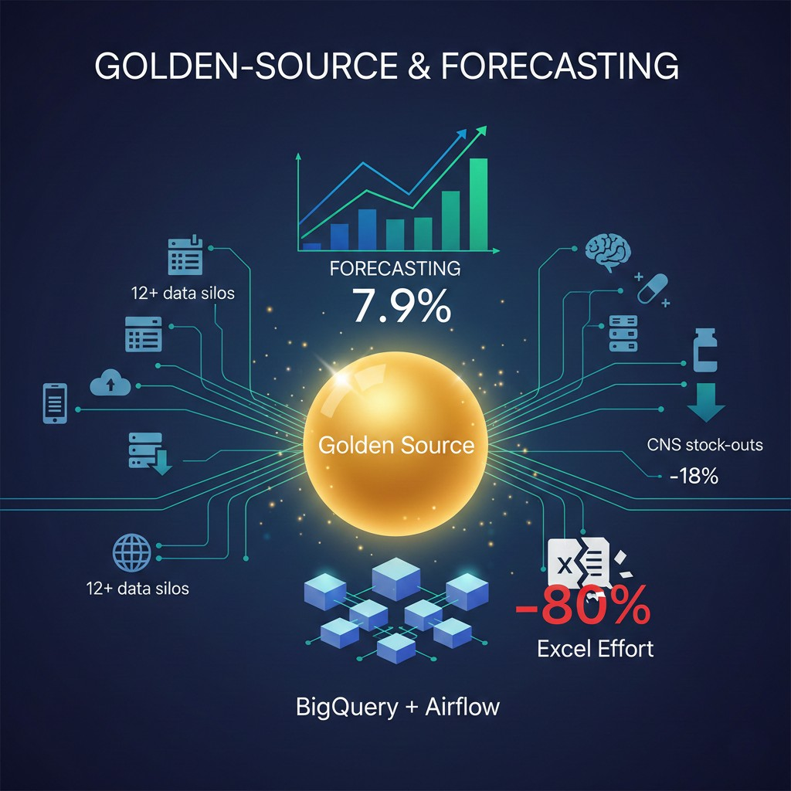

Projects
Browse selected work. Use filters to jump between areas.



Golden-Source & Forecasting
BigQuery · Airflow · LightGBM · MAPE 7.9%
- Data/ML
Astronomy Classifier (SDSS)
SVM vs kNN vs DT · ROC · feature selection
- Data/ML
Healthcare Data Mining
SMOTE · Classification/Regression · Clustering
- Data/ML
Java Marketplace
Spring Boot · Thymeleaf · Docker
- SWE/Systems
Huffman Compressor
Greedy optimality · Compress/Decompress · Benchmarks
- SWE/Systems
Twitter-like CLI
C · Data structures · Linked-list feed
- SWE/Systems
Vision Microservice at Scale
CNN-OCR · Docker/K8s · p95 < 300 ms · ~1k req/s
- Cloud/SRE
Queueing for Capacity Planning
M/D/1 · M/M/1/n · M/M/K (Erlang-C)
- Cloud/SRE
- HCAI/Vis
Experiment design · IV/DV · Results
InfoVis Dashboard (Vega-Lite)
Interactive multi-view · Tidy transforms
- HCAI/Vis
Looking for something specific? Contact me or browse my GitHub.